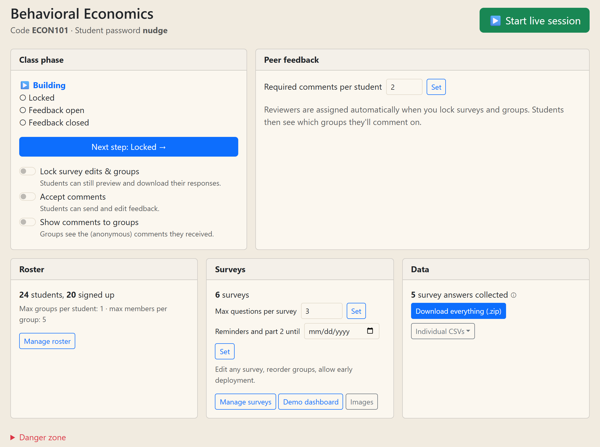
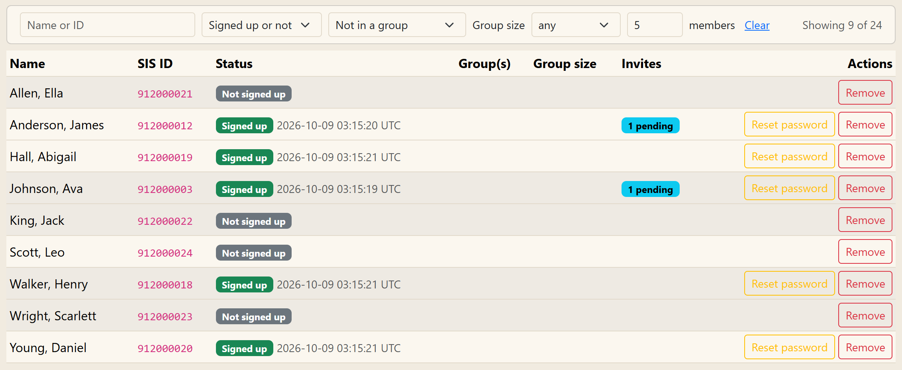
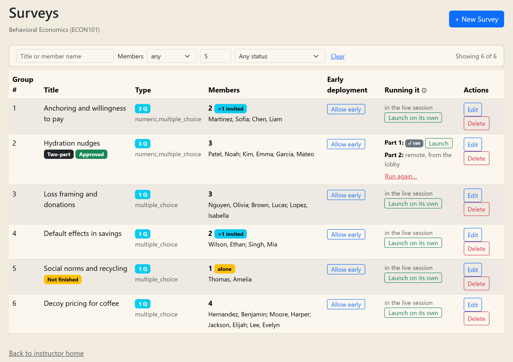
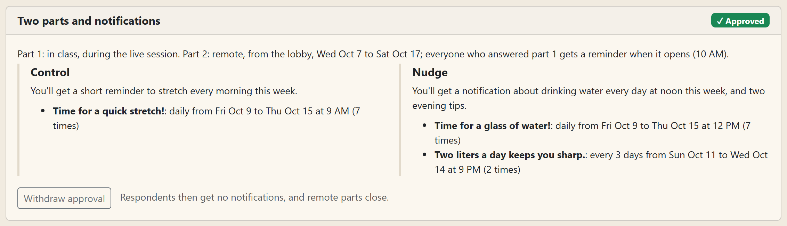
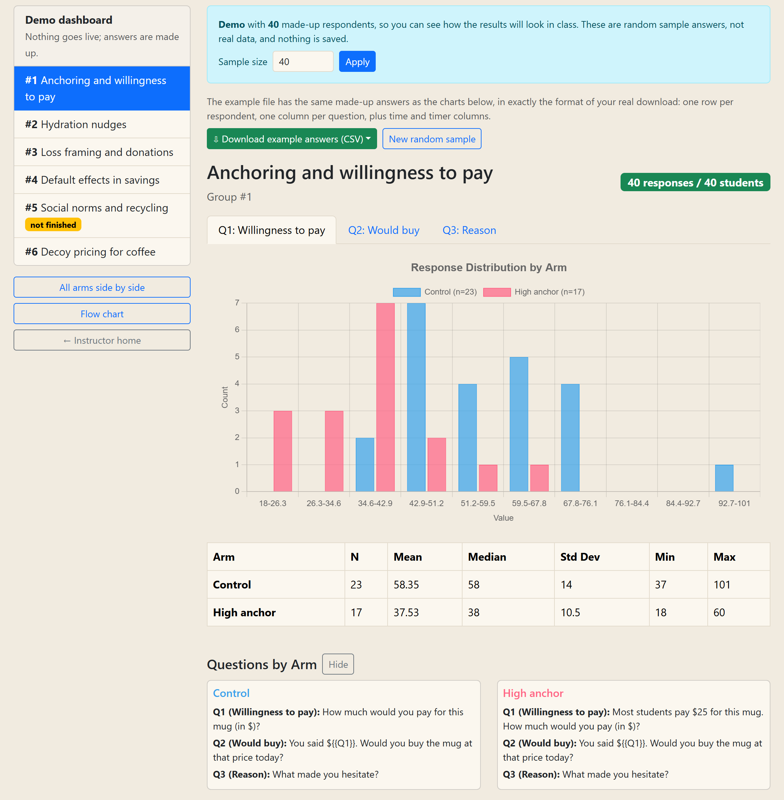
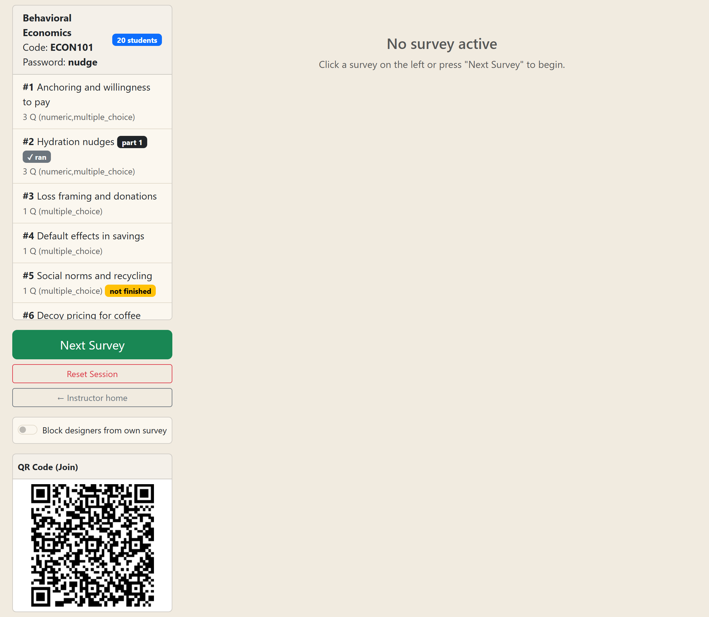

Groups of students design randomized experiments as surveys; on class day each group presents while everyone answers its survey on
their phones and the results appear on the projected dashboard. This guide covers everything on the instructor side. Students have
their own guide (docs/student-guide.pdf).
On the site's home page, choose Create Classroom and give it:
ECON101; unique, not case-sensitive);Later, log in from Host a Classroom on the home page with the code and the host password. Students sign in with their SIS ID; the first time they confirm their first name and choose a password, so names and IDs in your data always match the roster.
Everything between classes is on the instructor home: the class phase, the roster, the surveys and the data. Start live session opens the page you project in class.

Manage roster shows every student, whether they signed up, their group, its size and any pending invites. The filters at the top narrow the list: name or ID, signed up or not, in a group or not, with a pending invite, alone in their group, or group size fewer than, exactly or more than a number of members. "Showing X of Y" counts what's left.

The Class phase card moves the class through four steps with Next step, or with individual switches:
| Phase | What students can do |
|---|---|
| Building | Create groups, invite teammates, build and edit surveys. |
| Locked | Surveys and groups are frozen (you can still edit). Each student sees the groups they'll comment on. Previews and downloads keep working. |
| Feedback open | Students send their comments on other groups (each group opens for comments once its survey has run). |
| Feedback closed | Comments are final; groups read the comments they received, anonymized. |
Set Required comments per student before locking; assignments are balanced so every group gets about the same number of reviewers, never their own.
Manage surveys lists every group's survey with its members (count, "alone" and "full" badges, pending invites), status and badges (not finished, two-part, waiting for your approval). Filter by title or member, by number of members, or by status.

Both are optional; by default a survey has one part, no notifications, and runs in the live session. Groups set them up in two cards at the bottom of their survey page.
Part 2 starts at a question the group chooses. Each part runs in the live session, in class, launched separately (by you, from Manage surveys), or remote (answered from the lobby between the group's dates). Part 2 is only for students who answered part 1, in the same arm; in the live session, others see "This survey is for classmates who answered its part 1" and wait for the next survey. The dashboard marks part-2 questions.
Per arm: a short note respondents read first, then messages, each with a time of day and chosen days. After answering (part 1), respondents add them to their calendar (iPhone and computers: a calendar file; Android: Google Calendar links) or turn on notifications from the site. Times are each phone's local time unless the group picks a time zone.
Notifications and remote dates need your approval: nothing is sent, and remote parts stay closed, until you approve. Review them on the group's View survey page, where they're listed under the questions with an Approve button. If the group changes them afterwards, they need approval again (the home page lists them).

VAPID_SUBJECT on Render to mailto: plus your email, as a contact for the push services.
iPhones only get site notifications if the site is added to the Home Screen, so iPhone users are offered the calendar.Demo dashboard (Surveys card on the home page) lets you click through every survey's questions, images and charts with made-up answers, without going live. Use it to check the surveys before class or to walk the class through the designs.


When you lock surveys, each student is assigned groups to comment on. Comments are drafts until sent; students can jot private notes right after answering a live survey. Groups read the comments as "Reviewer 1, Reviewer 2"; you see names. Feedback comments and Feedback summary (required sent per student) are in the Data card for grading.
Download everything (.zip) on the home page has every file plus the uploaded images:
| File | Contents |
|---|---|
| all_responses.csv | Every answer, with names, IDs, the respondent ID, arm, time on the question, left-page and timeout flags, and part. |
| surveys_config.csv | What each arm showed: question texts and options. |
| participants.csv | The roster key: names, IDs and the random respondent IDs students see. |
| survey_designers.csv / survey_participation.csv | Who designed each survey; who answered each one. |
| feedback.csv / feedback_summary.csv | Comments and required-comment counts, for grading. |
| reminder_plans.csv | Each group's notifications per arm, how its parts run, and approval. |
| reminder_actions.csv / reminder_notifications.csv | Who downloaded the calendar file, opened Google Calendar links, turned notifications on; each notification sent, delivered and tapped. |
Groups download their own survey's responses, anonymized (random respondent IDs only), in wide (one row per respondent) or long (one row per answer) format.
/data) for the database and images. Pushing to the repository deploys it./data/app.db. Don't deploy during class: the site restarts.| Problem | What to do |
|---|---|
| A student can't sign in | Check they're on the roster (not removed); reset their password if needed. |
| A survey doesn't appear on phones | Students poll every 3 seconds; have them go back to the lobby and click Join. Check the survey isn't a part that's remote, or that it isn't already "ran" (click it to show it). |
| A group needs to run its survey again | Manage surveys → Run again… (download its data first). |
| A remote part doesn't open | It needs your approval and its dates; see "to approve" on the home page. |
| "0 survey answers collected" | Normal before surveys run; it counts answers, not surveys built. |